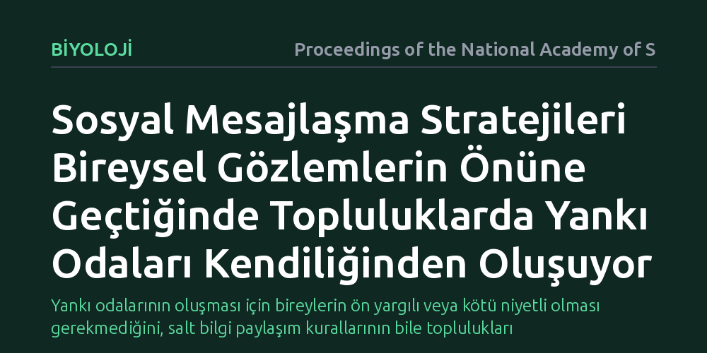

BIYOLOJI · Proceedings of the National Academy of Sciences · 2026-10-08
Araştırmacılar, bireylerin kendi gözlemleri ile akran mesajlarını harmanlarken kullandığı iletişim kurallarının ortak kararları nasıl etkilediğini inceledi. Çalışma, mesajlaşma stratejilerindeki küçük farklılıkların, harici bir yönlendirme olmaksızın topluluk içinde kendiliğinden yankı odaları ve kutuplaşma ürettiğini gösterdi.
Yankı odalarının oluşması için bireylerin ön yargılı veya kötü niyetli olması gerekmediğini, salt bilgi paylaşım kurallarının bile toplulukları kutuplaştırabildiğini gösterir.

Karınca kolonilerinden kuş sürülerine ve insan topluluklarına kadar pek çok biyolojik sistem, kararlarını iki temel bilgi kaynağını harmanlayarak alır: bireyin kendi gözlemleri ve çevresindeki diğer bireylerden gelen sosyal mesajlar. Normal şartlarda bu iki kaynağın birleşimi topluluğun daha isabetli kararlar almasını sağlamalıdır. Ancak çoğu zaman bireyler aynı fiziksel gerçekliğe baksalar dahi, grup içinde birbirinden tamamen kopuk ve birbirinin inancını pekiştiren alt kümeler yani yankı odaları oluşur.
Klasik yaklaşımlar bu kutuplaşmayı genellikle bireylerin ön yargılarına, kasıtlı yanlış yönlendirmelere ya da algoritma manipülasyonlarına bağlar. Oysa asıl soru, hiçbir ideolojik taraflılık ya da kötü niyet bulunmadığında bile, yalnızca bilginin aktarılma ve filtrelenme kurallarının tek başına kolektif aklı bölmeye yetip yetmeyeceğidir.
Araştırmacılar bu soruyu yanıtlamak için ekonomi kuramından hayvan davranışlarına kadar uzanan karar alma modellerini birleştiren kapsamlı bir simülasyon çerçevesi kurdu. Modelde yer alan her bir etmen, çevreden doğrudan edindiği gürültülü kişisel veriler ile ağdaki diğer üyelerin paylaştığı mesajları belirli kurallara göre işleyerek inançlarını güncelledi.
Simülasyonlarda farklı mesajlaşma stratejileri sınandı. Bireylerin hangi kesinlik eşiğinde mesaj paylaştığı, başkalarından gelen bilgiye ne kadar ağırlık verdiği ve iletişim ağının bağlantı sıklığı sistematik biçimde değiştirilerek, topluluğun ortak bir uzlaşıya varıp varamadığı matematiksel olarak hesaplandı.
Elde edilen bulgular, bireylerin kendi kanıtlarını paylaşma biçimindeki küçük stratejik değişimlerin grubun bütününde radikal fikir ayrılıklarına yol açtığını ortaya koydu. Bireyler yalnızca belirli bir güven eşiğine ulaştıklarında mesaj yaydığında ya da sosyal bilgiyi doğrudan gözlemlerinin önüne koyduğunda, bilgi akışı yerel kümelerde kilitlenmektedir.
Bu kilitlenme, harici bir yönlendirici ya da sansür olmaksızın, ağ içinde benzer fikirlerin birbirini beslediği kapalı yankı odalarının kendiliğinden türemesine yol açar. Topluluk ortak bir gerçeklik üzerinde uzlaşmak yerine, aynı başlangıç koşullarından hareketle birbirine zıt inançlara sahip alt gruplara bölünmektedir.
Bu sonuçlar, sosyal hayvan sürülerinden insan iletişim ağlarına kadar geniş bir yelpazede görülen bilgi körleşmesinin ardındaki temel mekanizmayı aydınlatmaktadır. Bir topluluğun yanlış kararlar alması veya kutuplaşması için bireylerin mantıksız davranması gerekmemektedir; iletişim protokolünün yapısı tek başına yankı odaları doğurabilmektedir.
Dolayısıyla kolektif karar alma süreçlerini sağlıklı tutmak için yalnızca iletilen içeriğe odaklanmak yeterli değildir. Bireylerin birinci elden kişisel gözlemler ile ikinci elden gelen sosyal mesajları nasıl dengelediğini belirleyen kuralların da gözetilmesi gerekir.